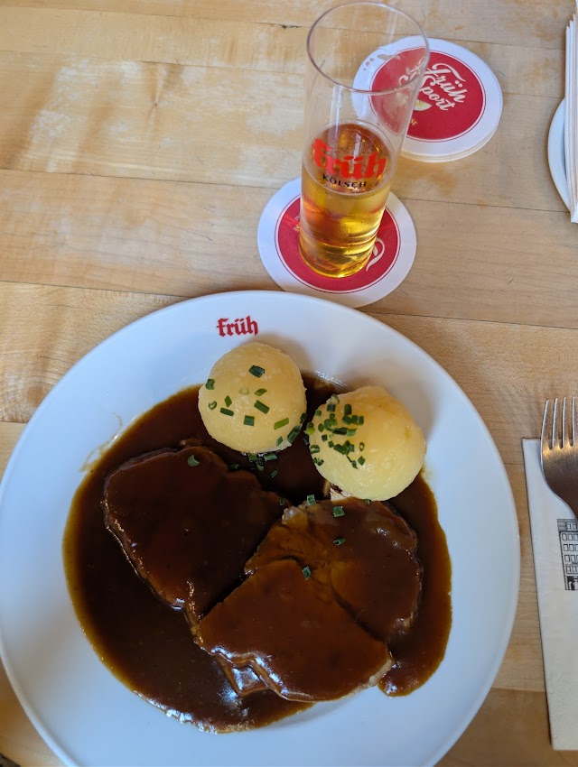
| 営業時間 | 月〜木 11:00〜23:00 / 金 11:00〜0:00 / 土 10:00〜0:00 / 日 10:00〜23:00 |
|---|---|
| 定休日 | なし |
| 住所 | Am Hof 12-18, 50667 Köln |
| 予約 | 可(推奨) — ☎ 電話で予約 +49 221 2613215 ／ 公式サイト |
| 公式 | 公式サイト |
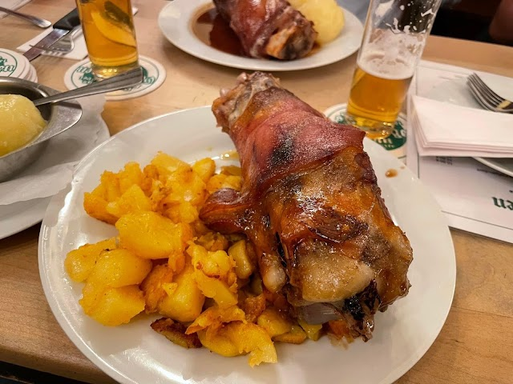
| 営業時間 | 毎日12:00開店(公式) |
|---|---|
| 定休日 | 無休 |
| 住所 | Friesenstraße 64-66, 50670 Köln |
| 予約 | 可(推奨) — ☎ 電話で予約 +49 221 135461 ／ 公式サイト |
| 公式 | 公式サイト |
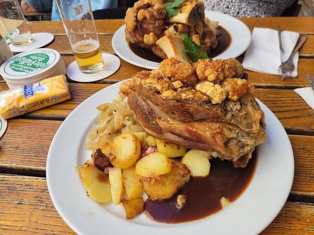
| 営業時間 | 月〜土 11:00〜14:30 / 16:30〜0:00 / 日 11:00〜14:30 / 4:30〜23:00 |
|---|---|
| 定休日 | 火曜 |
| 住所 | Siegesstraße 18, 50679 Köln |
| 予約 | 可(推奨) — ☎ 電話で予約 +49 221 814392 ／ 公式サイト |
| 公式 | 公式サイト |
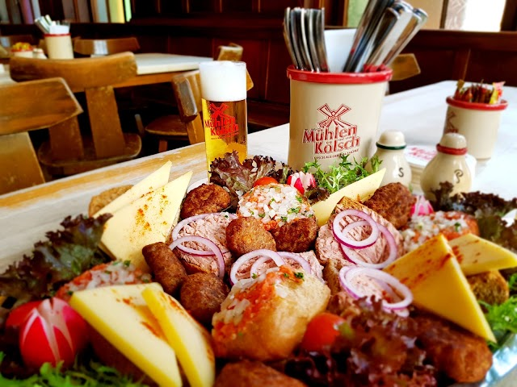
| 営業時間 | 月〜木 12:00〜23:00 / 金・土 12:00〜0:00 / 日 12:00〜23:00 |
|---|---|
| 定休日 | なし |
| 住所 | Heumarkt 6, 50667 Köln |
| 予約 | 可(推奨) — ☎ 電話で予約 +49 221 92160613 ／ 公式サイト |
| 公式 | 公式サイト |
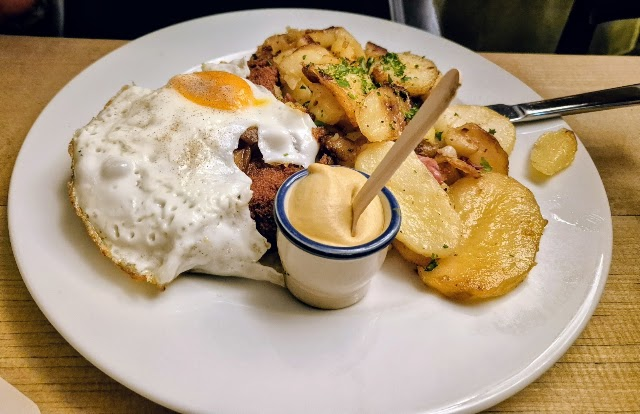
| 営業時間 | 毎日12:00開店(公式) |
|---|---|
| 定休日 | 無休 |
| 住所 | Unter Taschenmacher 5-7, 50667 Köln |
| 予約 | 可(推奨) — ☎ 電話で予約 +49 221 2578540 ／ 公式サイト |
| 公式 | 公式サイト |
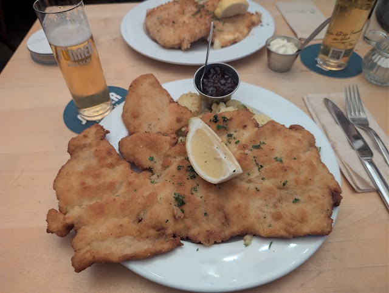
| 営業時間 | 月〜木17:00〜23:00、金土17:00〜24:00(公式) |
|---|---|
| 定休日 | 日曜 |
| 住所 | Zülpicher Str. 9, 50674 Köln |
| 予約 | 可(推奨) — ☎ 電話で予約 +49 221 232346 ／ 公式サイト |
| 公式 | 公式サイト |
| 営業時間 | 水〜土 12:00〜20:00 / 日 12:00〜18:00 |
|---|---|
| 定休日 | 月・火曜 |
| 住所 | Salzgasse 6, 50667 Köln |
| 予約 | 不要(店頭) — 公式サイト |
| 公式 | 公式サイト |
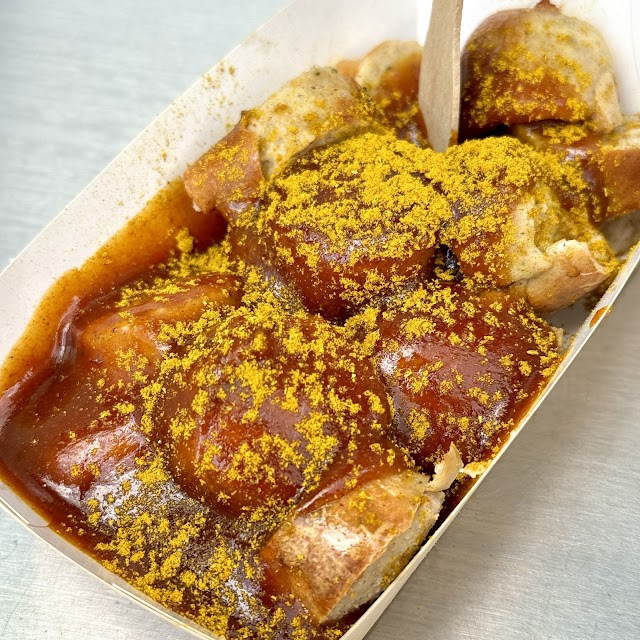
| 営業時間 | 毎日 11:00〜18:00 |
|---|---|
| 定休日 | 無休 |
| 住所 | Willy-Millowitsch-Platz (Breite Str./Ehrenstr.間), 50667 Köln |
| 予約 | 不要(店頭) — 公式サイト |
| 公式 | 公式サイト |
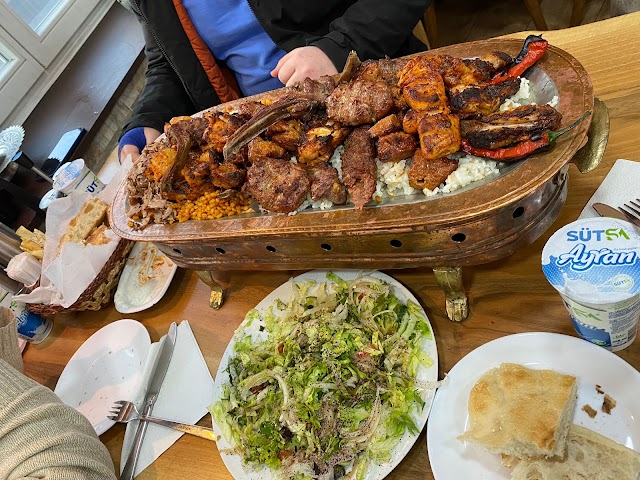
| 営業時間 | 月〜日 Open 24 hours |
|---|---|
| 定休日 | なし |
| 住所 | Keupstraße 19-21, 51063 Köln |
| 予約 | 不要(店頭) |
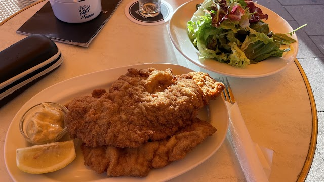
| 営業時間 | 毎日9:00〜24:00頃 |
|---|---|
| 定休日 | 無休 |
| 住所 | Aachener Straße 30, 50674 Köln |
| 予約 | 不要(店頭) — ☎ 電話で予約 +49 221 1395577 ／ 公式サイト |
| 公式 | 公式サイト |
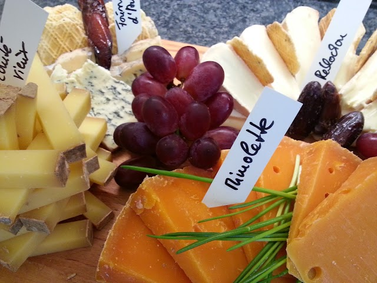
| 営業時間 | 火〜金 10:00〜13:30/14:30〜18:30、土 9:00〜14:00 |
|---|---|
| 定休日 | 日曜・月曜 |
| 住所 | Idastraße 46, 51069 Köln |
| 予約 | 不要(店頭) — ☎ 電話で予約 +49 221 79003642 ／ 公式サイト |
| 公式 | 公式サイト |
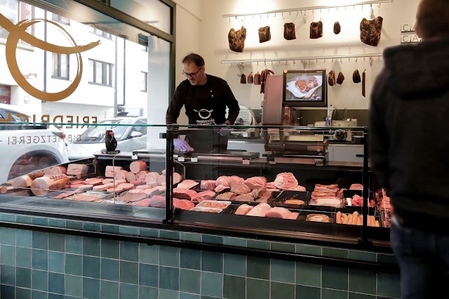
| 営業時間 | 火〜金9:00〜18:00、土9:00〜14:00 |
|---|---|
| 定休日 | 月曜 |
| 住所 | Sülzburgstraße 126, 50937 Köln |
| 予約 | 不要(店頭) — ☎ 電話で予約 +49 221 42307878 ／ 公式サイト |
| 公式 | 公式サイト |
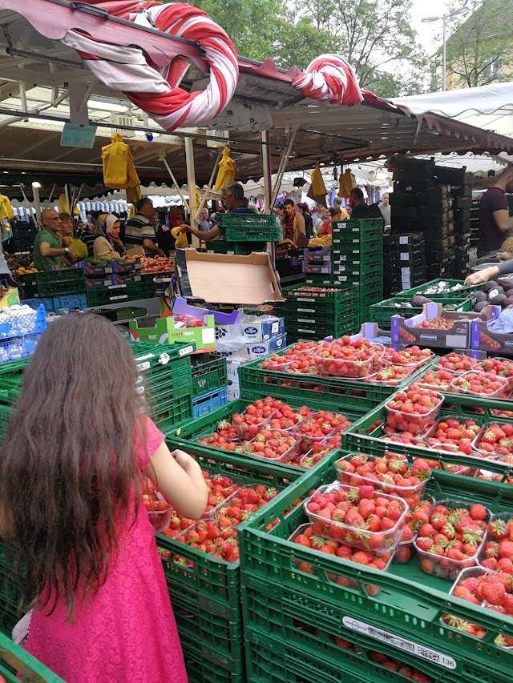
| 営業時間 | 月〜金7:00〜13:00、土7:00〜14:30 |
|---|---|
| 定休日 | 日曜 |
| 住所 | Wilhelmplatz, 50733 Köln |
| 予約 | 不要(店頭) — ☎ 電話で予約 +49 221 346430 |
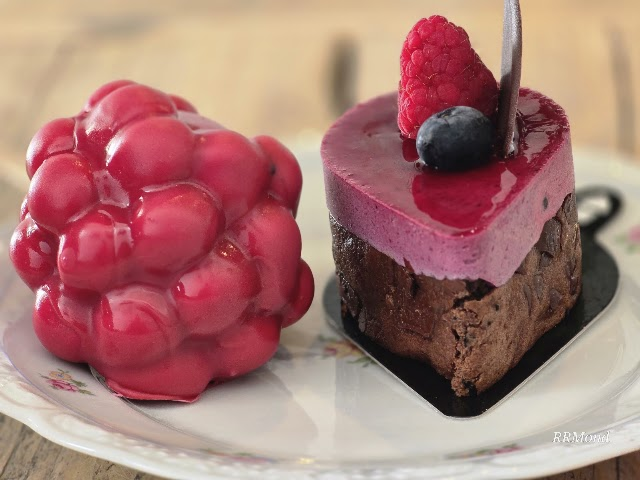
| 営業時間 | 毎日11:00〜18:00(祝日も同様・公式) |
|---|---|
| 定休日 | 無休 |
| 住所 | Apostelnstraße 19, 50667 Köln |
| 予約 | 不要(店頭) — ☎ 電話で予約 +49 221 1707108 ／ 公式サイト |
| 公式 | 公式サイト |
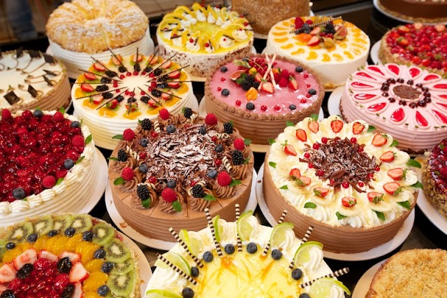
| 営業時間 | 月〜土9:00〜19:00(公式) |
|---|---|
| 定休日 | 日曜 |
| 住所 | Schildergasse 103, 50667 Köln |
| 予約 | 不要(店頭) — ☎ 電話で予約 +49 221 9258260 ／ 公式サイト |
| 公式 | 公式サイト |
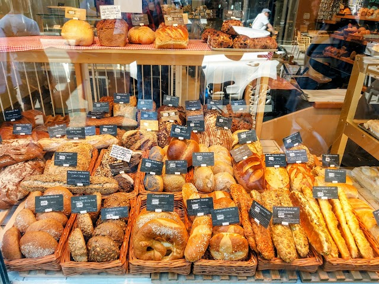
| 営業時間 | 火〜金 7:30〜15:00 / 土 7:00〜15:00 |
|---|---|
| 定休日 | 日月・祝日 |
| 住所 | Ehrenstraße 75, 50672 Köln |
| 予約 | 不要(店頭) — ☎ 電話で予約 +49 221 255632 ／ 公式サイト |
| 公式 | 公式サイト |
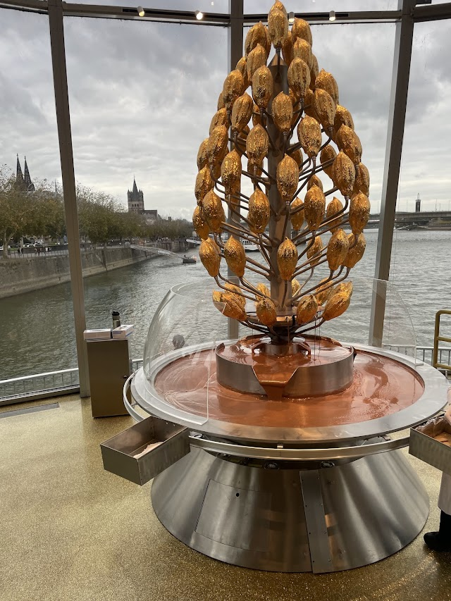
| 営業時間 | 毎日10:00〜18:00(公式) |
|---|---|
| 定休日 | 無休 |
| 住所 | Am Schokoladenmuseum 1a, 50678 Köln |
| 予約 | 不要(店頭) — ☎ 電話で予約 +49 221 9318880 ／ 公式サイト |
| 公式 | 公式サイト |
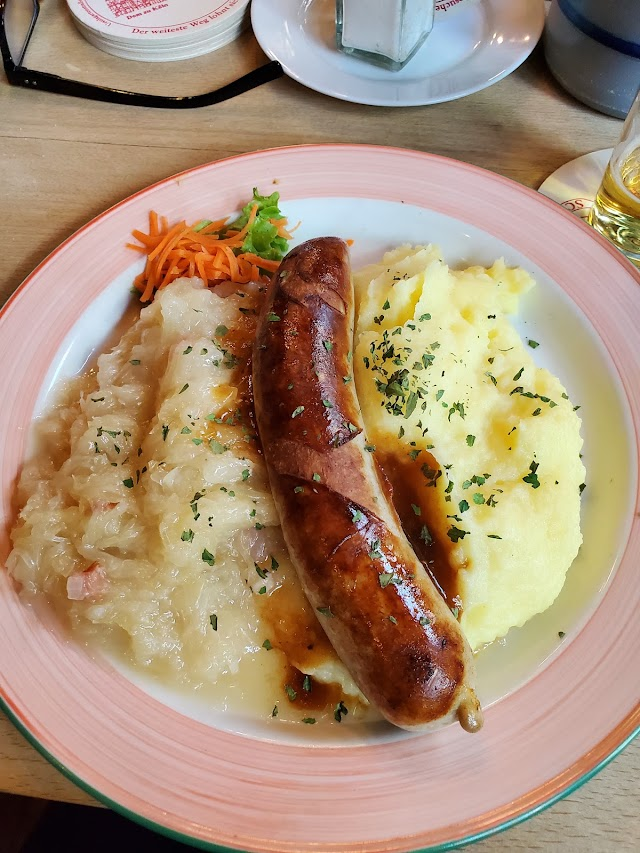
| 営業時間 | 火〜木16:30〜23:00、金土11:00〜14:00/16:30〜24:00(公式) |
|---|---|
| 定休日 | 日月・祝日 |
| 住所 | Ursulagartenstraße 11-15, 50668 Köln |
| 予約 | 可(推奨) — ☎ 電話で予約 +49 221 132581 ／ 公式サイト |
| 公式 | 公式サイト |
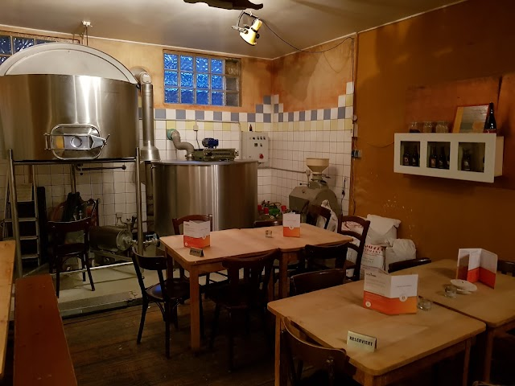
| 営業時間 | 火水17:00〜24:00、木〜土17:00〜翌1:00(公式) |
|---|---|
| 定休日 | 日月 |
| 住所 | Christianstraße 2, 50825 Köln |
| 予約 | 可(推奨) — ☎ 電話で予約 +49 221 2856932 ／ 公式サイト |
| 公式 | 公式サイト |
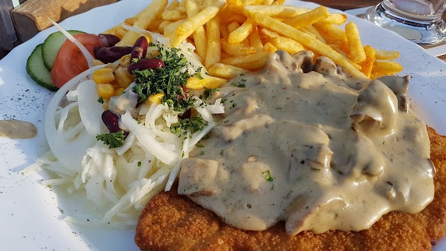
| 営業時間 | 火〜金 2:00〜23:00 / 土・日 13:00〜0:00 |
|---|---|
| 定休日 | 月曜 |
| 住所 | Volksgartenstraße 27, 50677 Köln |
| 予約 | 可(推奨) — ☎ 電話で予約 +49 221 382626 ／ 公式サイト |
| 公式 | 公式サイト |
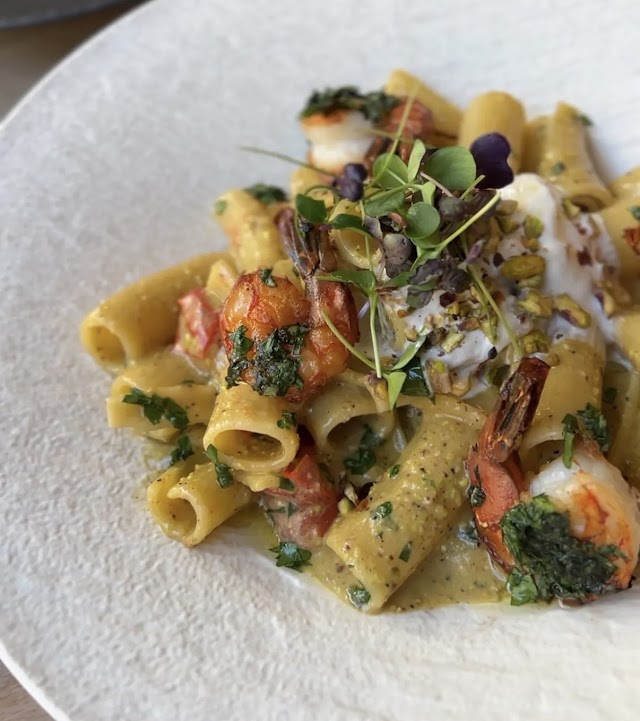
| 営業時間 | 火〜木 17:00〜22:00、金土 15:00〜23:00 |
|---|---|
| 定休日 | 日曜・月曜 |
| 住所 | Antwerpener Straße 5, 50672 Köln |
| 予約 | 可(推奨) — 公式サイト |
| 公式 | 公式サイト |
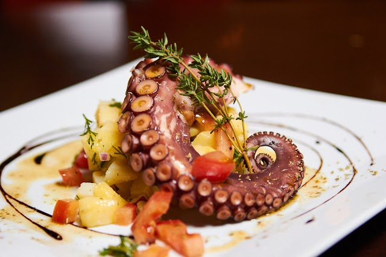
| 営業時間 | 月 17:30〜22:30、水・木 17:30〜23:00、金・土 17:30〜24:00、日 17:30〜22:30 |
|---|---|
| 定休日 | 火曜 |
| 住所 | Sechzigstraße 1, 50733 Köln |
| 予約 | 可(推奨) — ☎ 電話で予約 +49 221 78947500 ／ 公式サイト |
| 公式 | 公式サイト |
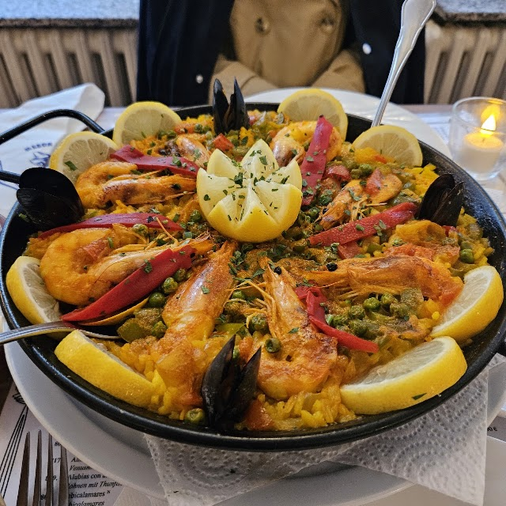
| 営業時間 | 月〜金 12:00〜14:30 / 17:00〜0:00 / 土 17:00〜0:00 / 日 1:00〜22:00 |
|---|---|
| 定休日 | なし |
| 住所 | Gladbacher Straße 11, 50672 Köln |
| 予約 | 可(推奨) — ☎ 電話で予約 +49 221 515506 ／ 公式サイト |
| 公式 | 公式サイト |
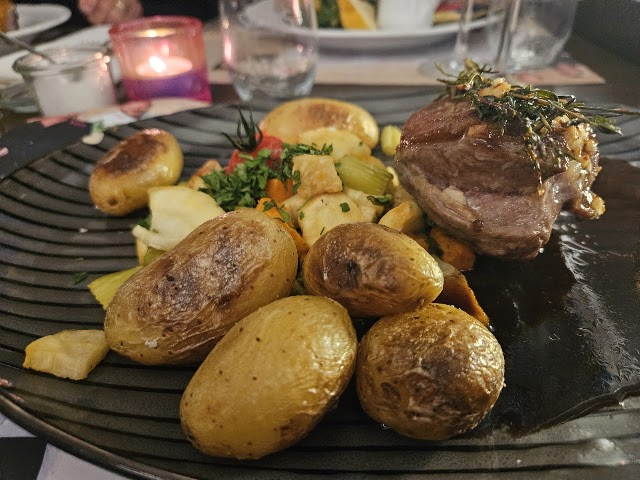
| 営業時間 | 月〜金 12:00〜、土 18:00〜(キッチンは22:00まで) |
|---|---|
| 定休日 | 日曜(要確認) |
| 住所 | Aachener Straße 1002, 50858 Köln |
| 予約 | 可(推奨) — ☎ 電話で予約 +49 221 17044392 ／ 公式サイト |
| 公式 | 公式サイト |
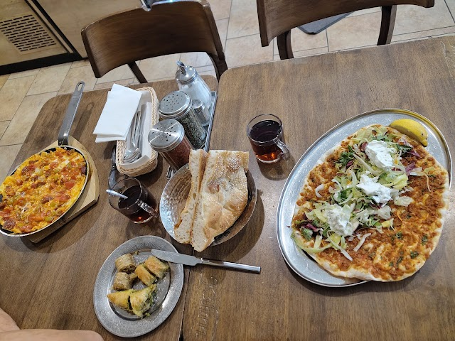
| 営業時間 | 月〜木・日 8:00〜翌1:00、金・土 8:00〜翌3:00 |
|---|---|
| 定休日 | 無休 |
| 住所 | Keupstraße 69, 51063 Köln |
| 予約 | 可(推奨) — ☎ 電話で予約 +49 221 616597 ／ 公式サイト |
| 公式 | 公式サイト |
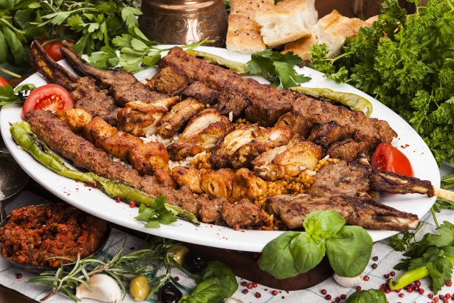
| 営業時間 | 月〜木 7:00〜2:00 / 金・土 7:00〜3:00 / 日 7:00〜2:00 |
|---|---|
| 定休日 | なし |
| 住所 | Keupstraße 64, 51063 Köln |
| 予約 | 可(推奨) — ☎ 電話で予約 +49 221 626559 ／ 公式サイト |
| 公式 | 公式サイト |
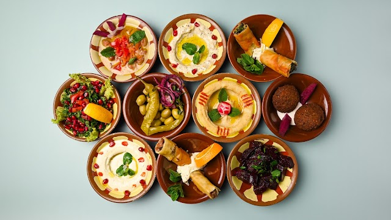
| 営業時間 | 月・水〜日 17:30〜24:00 |
|---|---|
| 定休日 | 火曜 |
| 住所 | Lenauplatz 8, 50825 Köln |
| 予約 | 可(推奨) — ☎ 電話で予約 +49 221 53098883 ／ 公式サイト |
| 公式 | 公式サイト |
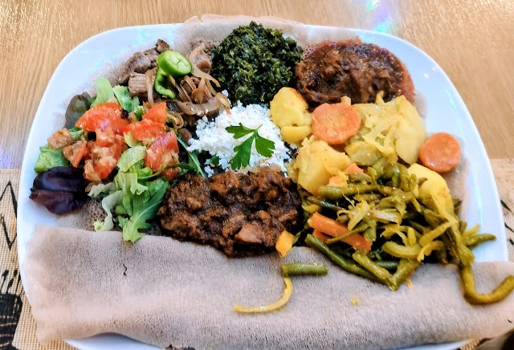
| 営業時間 | 毎日 17:00〜23:00 |
|---|---|
| 定休日 | 無休 |
| 住所 | Luxemburger Straße 17, 50674 Köln |
| 予約 | 可(推奨) — ☎ 電話で予約 +49 221 4204891 ／ 公式サイト |
| 公式 | 公式サイト |
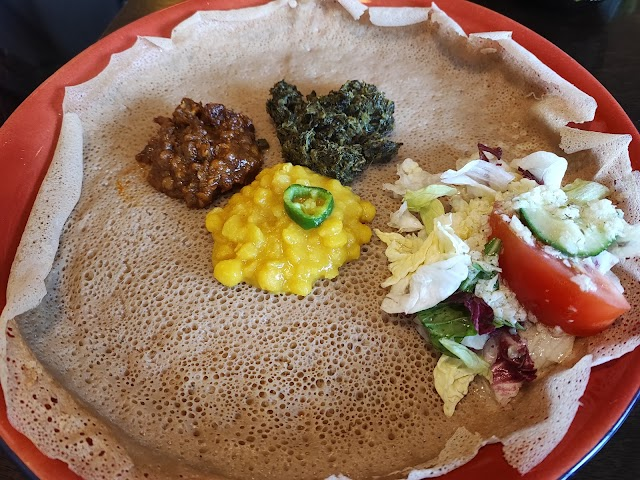
| 営業時間 | 月〜土 5:00〜22:00 / 日 4:00〜21:00 |
|---|---|
| 定休日 | なし |
| 住所 | Ehrenfeldgürtel 91, 50823 Köln |
| 予約 | 可(推奨) — ☎ 電話で予約 +49 221 9520352 ／ 公式サイト |
| 公式 | 公式サイト |
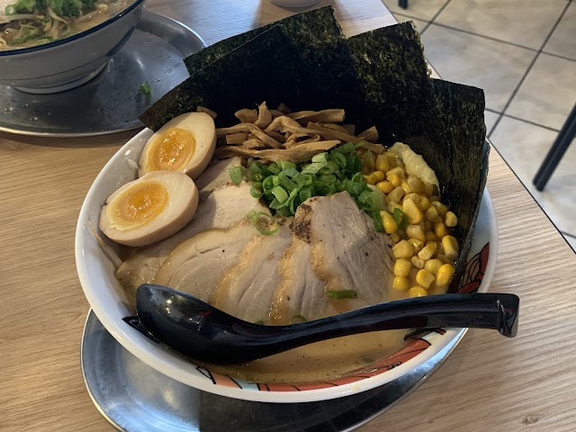
| 営業時間 | 月〜土 11:30〜22:00 |
|---|---|
| 定休日 | 日曜 |
| 住所 | Mathiasstraße 24-26, 50676 Köln |
| 予約 | 可(推奨) — ☎ 電話で予約 +49 221 95628690 ／ 公式サイト |
| 公式 | 公式サイト |
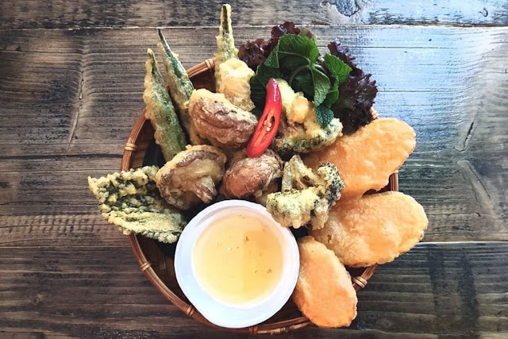
| 営業時間 | 月〜土 12:00〜22:00 |
|---|---|
| 定休日 | 日曜 |
| 住所 | Friesenwall 29, 50672 Köln |
| 予約 | 可(推奨) — ☎ 電話で予約 +49 221 79003798 ／ 公式サイト |
| 公式 | 公式サイト |
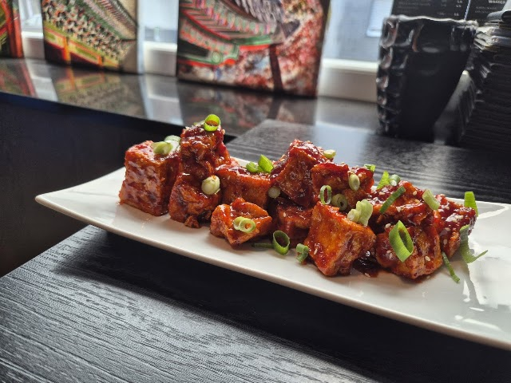
| 営業時間 | 火〜木 18:00〜22:00、金・土 17:00〜23:00、日 17:00〜22:00 |
|---|---|
| 定休日 | 月曜 |
| 住所 | Neusser Straße 654, 50737 Köln |
| 予約 | 可(推奨) — ☎ 電話で予約 +49 177 5147920 ／ 公式サイト |
| 公式 | 公式サイト |
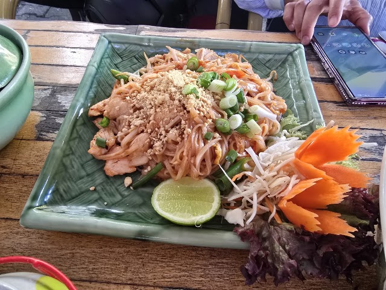
| 営業時間 | 月〜金 11:30〜22:30 / 土 12:00〜22:30 / 日 12:00〜22:00 |
|---|---|
| 定休日 | 水曜 |
| 住所 | Bayardsgasse 4, 50676 Köln |
| 予約 | 可(推奨) — ☎ 電話で予約 +49 221 16834442 ／ 公式サイト |
| 公式 | 公式サイト |
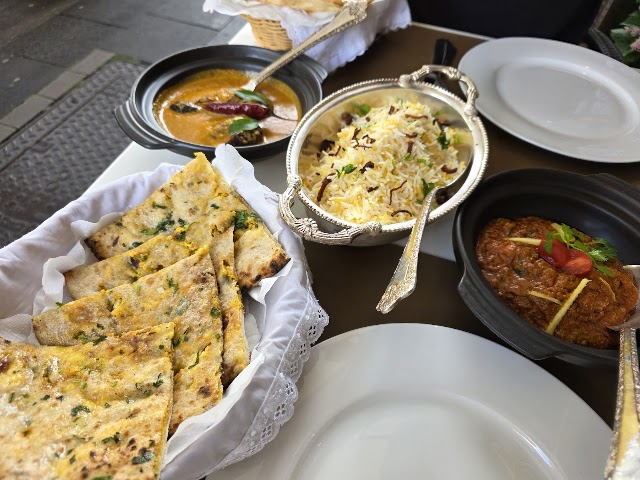
| 営業時間 | 月〜木 11:30〜15:00 / 17:00〜22:30、金〜日・祝 12:00〜22:30 |
|---|---|
| 定休日 | 無休(要確認) |
| 住所 | Weyerstraße 114, 50676 Köln |
| 予約 | 可(推奨) — ☎ 電話で予約 +49 221 34892828 ／ 公式サイト |
| 公式 | 公式サイト |
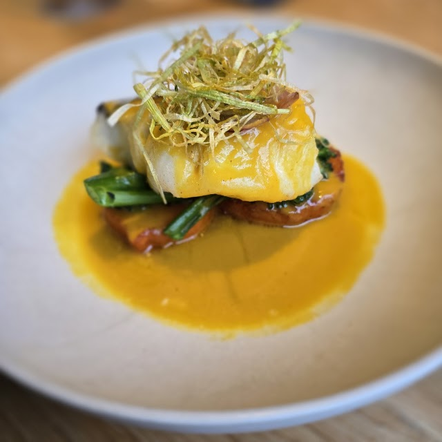
| 営業時間 | 水〜土 18:00〜23:00 |
|---|---|
| 定休日 | 日〜火曜 |
| 住所 | Karolingerring 40, 50678 Köln |
| 予約 | 可(推奨) — ☎ 電話で予約 +49 221 95811553 ／ 公式サイト |
| 公式 | 公式サイト |
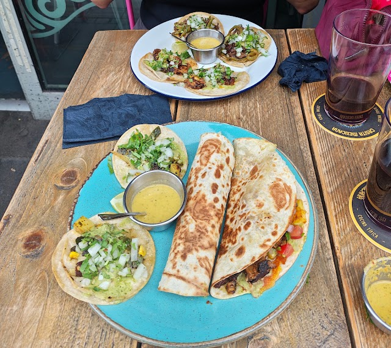
| 営業時間 | 月〜木 12:00〜23:00 / 金 12:00〜0:00 / 土 13:00〜0:00 / 日 1:00〜22:30 |
|---|---|
| 定休日 | なし |
| 住所 | Severinstraße 10-12, 50678 Köln |
| 予約 | 可(推奨) — ☎ 電話で予約 +49 221 95936466 ／ 公式サイト |
| 公式 | 公式サイト |
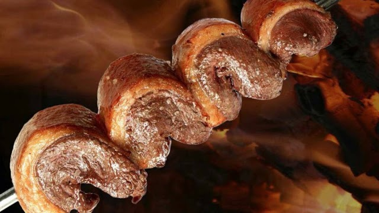
| 営業時間 | 火〜木 18:00〜23:00、金・土 17:00〜23:30、日・祝 17:00〜22:00 |
|---|---|
| 定休日 | 月曜 |
| 住所 | Maybachstraße 22, 50670 Köln |
| 予約 | 可(推奨) — ☎ 電話で予約 +49 221 1301767 ／ 公式サイト |
| 公式 | 公式サイト |
※ブラウハウスは予約不可の店が多く、開店直後が狙い目。Keupstraße(トルコ人街)はドイツ最大級 — 本格ケバブの遠征先。
選考基準: ①個人・公式ブログ/現地メディアでの名店言及 ②複数レビューサイトでの口コミ・行列の突出 ③創業年・代替わりのある老舗 ④食の専門街・市場立地 ⑤受賞歴・ガイド掲載。写真は各店の料理・店内の実写(Google Maps投稿写真、© Google)。予約は各カードの「予約」欄のリンク(電話/予約サイト)から。営業時間・定休日は2026年7月時点の各種サイト情報で、変更があり得ます。